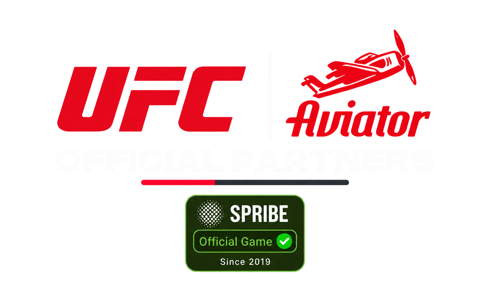

Preparing your round…
Place one or two bets before take-off. Cash out while the plane is flying to collect your bet multiplied by the current coefficient. If it flies away before cash-out, the bet is lost.
In Auto, enable Auto Cash Out and set a target before placing your bet. The server settles the bet at that target if it is reached.
This is Color Win’s own crash game. It is not connected to SPRIBE’s Aviator service. All players share the same server-timed round and crash result. Wallet transactions are handled by Color Win. Queued bets run only while this screen remains open.